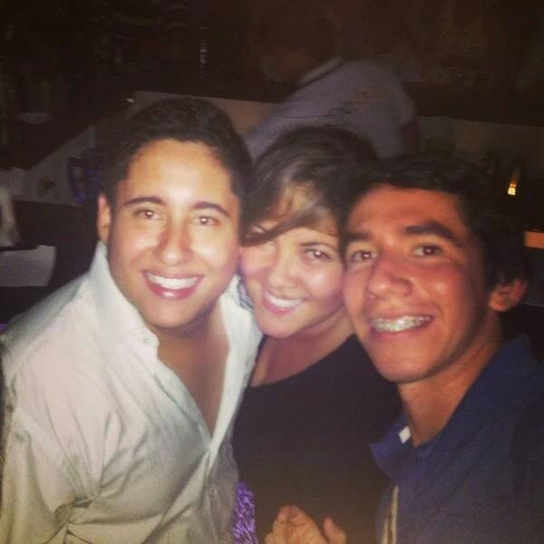

Oscar Manuel Aguillon Silva
Migueland
julian

Perfil de facebook
Formación
Fundación universitaria de San Gil - Unisangil
Tecnología en Sistemas
Agosto 2010
Fundación universitaria de San Gil - Unisangil
Ingeniría en Sistemas - 10 nivel
2011 - 2014
Perfil
- Experiencia en el manejo de los CMS (Sistema Gestor de contenidos) Joomla.
- Desarrollo de estructuras HTML - HTML5, integrado con Hojas de Estilo CSS - CSS3.
- Desarrollo web empleando responsive web desing (Diseño web Adaptativo).
- Desarrollo Web apoyado en el FrameWork de Javascript (jQuery).
- Manejo de PHP básico para la creacion de plantillas joomla.
- Adaptación de estilos para los plugins y modelos de CMS Joomla orientados hacia en ambiente grafico agradable y usable para el usuario final.
- Creación de plantillas completamente ajustadas a los requerimientos del usuario o cliente para el CMS Joomla.
- Manejo de bases de datos Mysql con phpmyadmin, elaboracion de aplicativos con PHP integrado con CSS,HTML y consultas a bases de datos.
- Manejo de framework php codeigniter bajo patron MVC.
- Manejo de controladores de version como github y subversión.
- Creación de aplicaciones móviles con tecnología phonegap bajo frameworks javascript y css como zepto, jQuery mobile,goratchet, bootstrap.
- Manejo de javascript bajo patron de diseño.
- Manejo de photoshop nivel medio, usado para implementar diseños web de psd a html.
- Envio de correos html personalizados con phpmailer via smtp.
Experiencia Laboral - 5 años aprox
2008 - 2011 Webmaster
Fundación Universitaria de san Gil Unisangil
2011 - 2012 Desarrollador web
ImagineriaWeb Diseño y desarrollo de software San Gil - Colombia
2012 Desarrollador web
Webmarketing Solutions - Mexico
2012 - 2013 Desarrollador web
App Spring Tehcnologies - Bogotá Colombia
2013 - 2014 Desarrollador web
Franco Marketing San Gil - Colombia
Como contactarme
Celular: 300 4212136
Numero Fijo: 7240434
E-mail: aguillon_@hotmail.com - aguillonsilva@gmail.com
Redes: facebook.com/oaguillon - twitter.com/oaguillon
Github: github.com/oaguillon
Google+